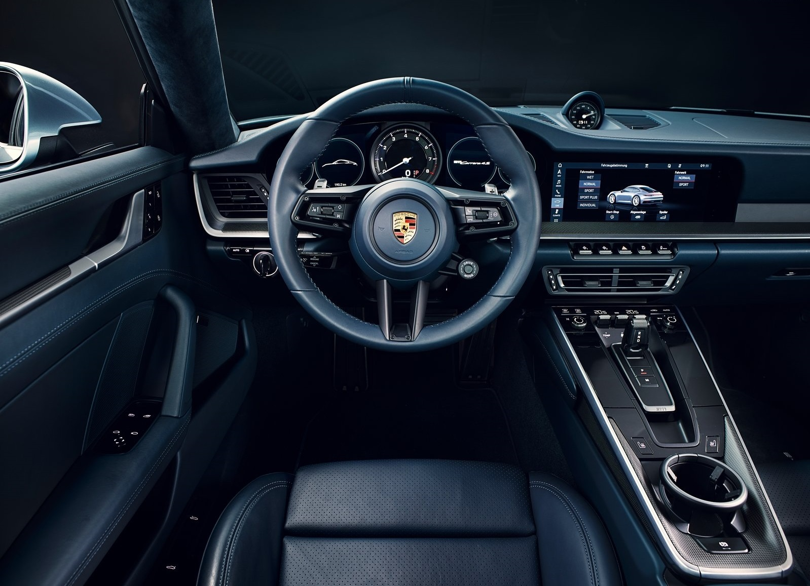
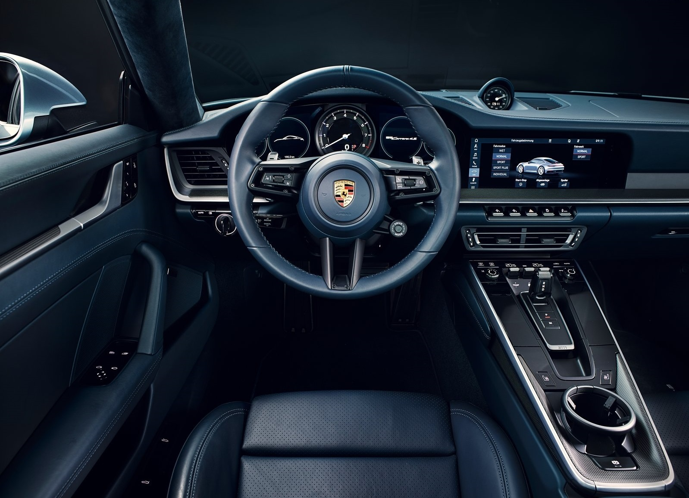

MARCAS DE AUTOMÓVILES

Los autos son uno de los mejores inventos de la historia, porque pueden llevarte a lugares fantásticos que no conocías o
que sería imposible conocer de no tener estas máquinas. Con el tiempo estos se fueron modificando según las necesidades del
conductor: más velocidad, más comodidad o más espacio.
Debido a esto se crearon diferentes marcas de vehículos enfocadas en diferentes necesidades como:
PORSCHE: There is No Substitute
CHEVROLET: Find new roads
FORD: Go Further
PEUGEOT: Motion & Emotion
HONDA: The Power of Dreams
MAZDA: Zoom-Zoom
TOYOTA: Today Tomorrow Toyota
SUZUKI: Way of life!
MITSUBISHI: Driving Quality
MERCEDES: The best or nothing
VOLKSWAGEN: Das Auto
RENAULT: Passion for Life
NISSAN: Innovation that Excites
Existe infinidad de marcas de autos que no terminaría de enlistar, lo cual confirma lo que había mencionado anteriormente
"los autos son uno de los mejores inventos de la historia".
En un mundo tan globalizado es importante saber usar y crear páginas web, ya que nos facilita la búsqueda de información; día con día son más las páginas creadas ya sea para informar, ofertar un producto o por pura diversión. Éstas páginas pueden incluir imágenes en diferetes formatos, por ejemplo: JPG, PNG O GIF, por mencionar algunos. Es posible cambiar de color el fondo, colocar una fuente y tamaño diferente de letra.
 
